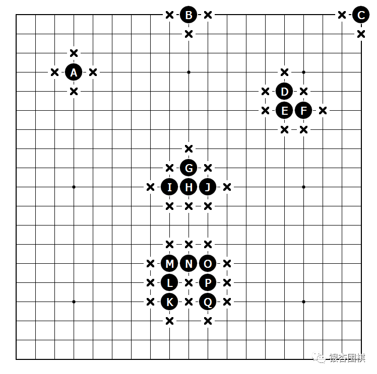
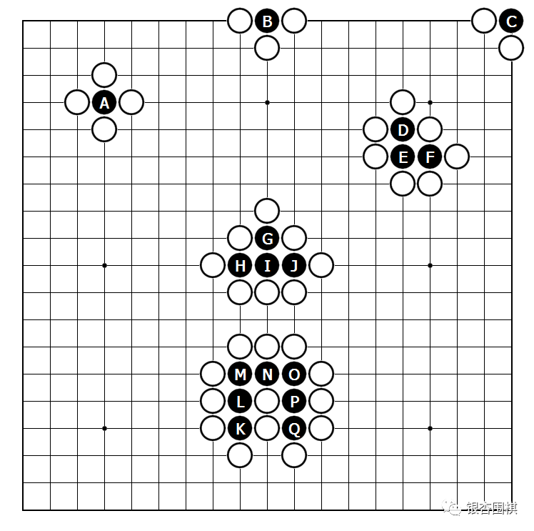
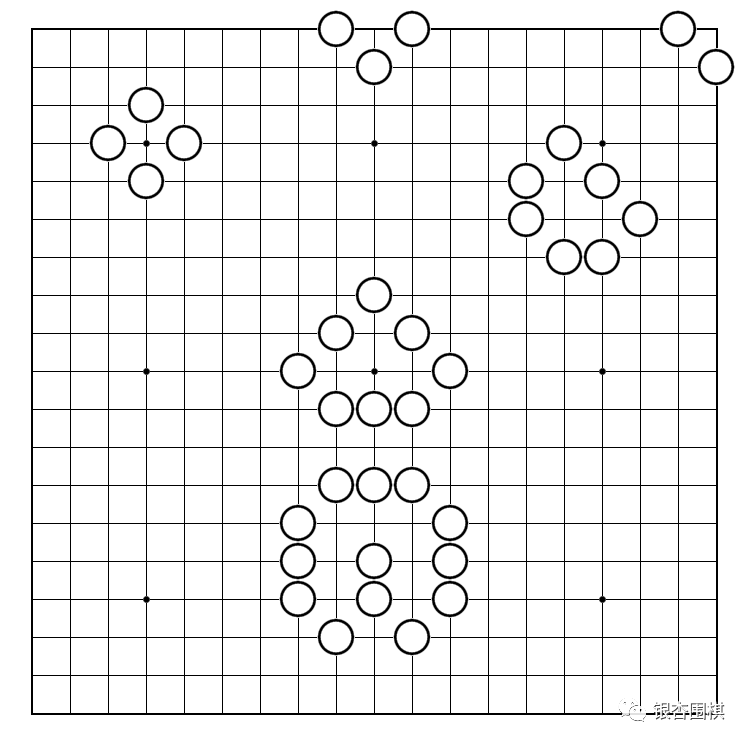
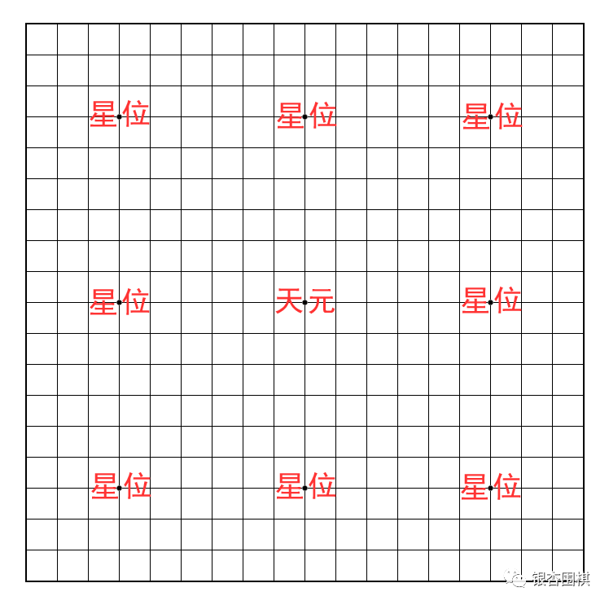
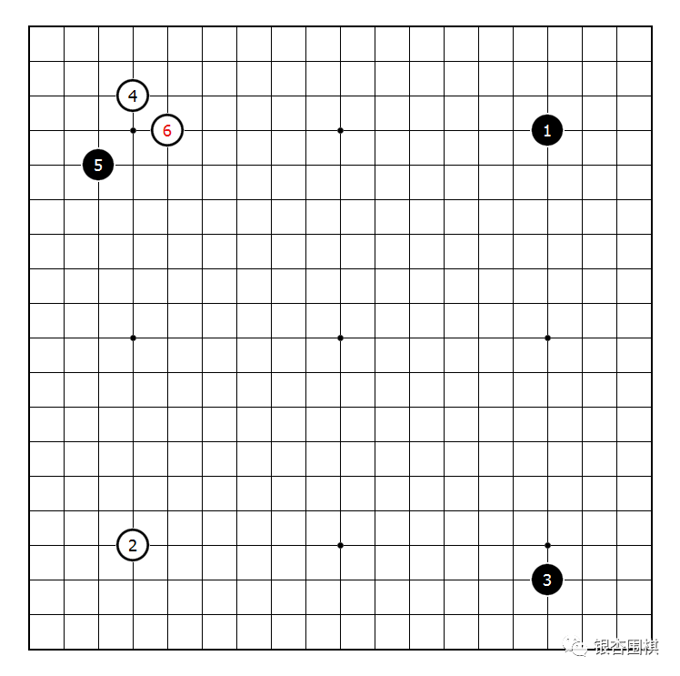
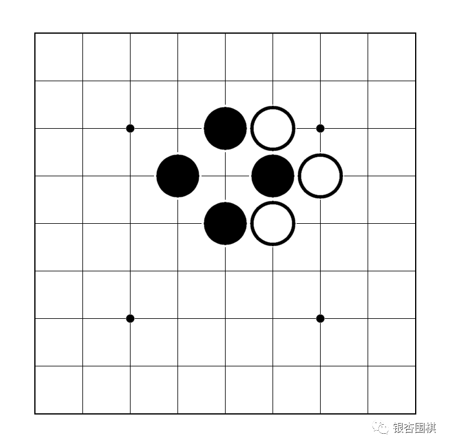
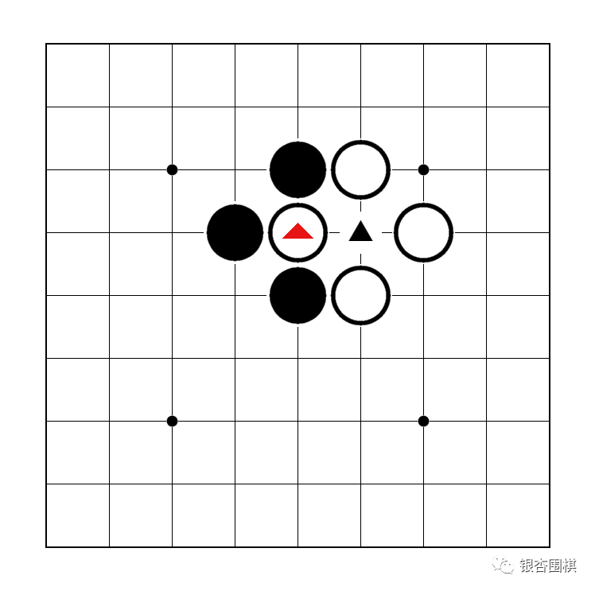

轻轻松松学会下围棋
□ 银杏围棋原创 2022-11-14
我们看古装片中很多人将围棋称为才艺。一个才子，不精通琴棋书画，谁认你是才子啊？现在学围棋的孩子越来越多了，对于开发智力，提升专注力、逻辑思维能力和抗挫折能力都有很大的帮助。
那么，围棋到底是怎么下的呢？很多人可能会觉得很复杂，其实不然，只要掌握以下几点，学会下围棋不是什么难事。先总结一下：
1. 棋子的气：棋盘上与棋子直接相连的交叉点如果没有棋子，则这个交叉点称为棋子的气。如果一块棋没有气了，则应从棋盘上拿走，称为“提子”。
2. 棋盘：标准棋盘是19路的，总共361个交叉点。
3. 走法：对局双主各执一种颜色的棋子，黑先白后交流落子。
4. 胜负判断：双方均认为已经下完的时候开始判断胜负，谁围的地盘（己方活棋和所围成的空）多者为胜。
5. 打劫：当某方提掉对方一颗棋子之后，对方不能马上把刚刚提掉对方的那颗子提回来，需要一个回合之后才能提回来。称为打劫。
6. 围棋规则：围棋规则有很多，目前国际上没有统一的规则。这些规则包括：中国规则、日韩规则、应氏规则等。不同规则有不同的胜负判断方法。但绝大多数棋局在不同的规则下胜负是一致的，存在极少数的棋局在不同规则下胜负不一致的情况。
1. 棋子的气
棋盘上与棋子直接相连的交叉点如果没有棋子，则这个交叉点称为棋子的气。如果一块棋没有气了，则应从棋盘上拿走，称为“提子”。
如下图，A位一子直接相连的交叉点有4个，所以A位一子有4口气。
B位2路一子直接相连的交叉点有3个，所以B位一子有3口气。
C位角上一子直接相连的交叉点有2个，所以C位一子有2口气。
而D-F三个子连在一起，气要一起算。这三个子直接相连的交叉点有7个，所以D-F三子有7口气。
同样G-J四子有8口气，K-Q七子有13口气。

那如果这些子的周围都被对方填满，那么这些子就成了无气的状态。应该立即从棋盘上拿掉，拿掉之前是下面的状态：

提掉之后的状态：是不是整个人为之一震？感觉整个世界清静了。

2. 棋盘
标准棋盘是19路的，总共有19X19=361个交叉点。
棋盘上有9个小黑点，叫做星位。中间的星位又叫“天元”。如果你遇到马天元、王天元、张天元、李天元，那么基本可以推断出他的父亲喜欢下围棋。[手动滑稽]
星位有啥作用？怕你在棋盘上找不到方向，帮你标记位置呗。

3. 走法
黑先白后， 一人一步，走棋不悔——落子之后不可移动位置。比如下面这张图。

4. 胜负判断
胜负判断规则很多啦，不同规则还有一些小区别。这里以中国规则为例，由于黑棋先行有很大的优势，那么终局时需要还给3又3/4子给白棋，这样361个交叉点一人一半的话是180.5，黑棋要赢棋的话需要有180.5+3.75=184.25子及以上才能赢棋。
当然最终数下来黑棋有184.25子是不可能的啦，黑棋最少赢棋的子数是184.5，有人问为什么会有0.5子呢？这个出现的比较少，在有眼双活的情况下是有可能的，我们不管了。如果没有有眼双活的话黑棋要185子及以上才能赢。
5. 打劫
打劫应该是围棋里面最复杂的一个基本规则了。还是举一个栗子（很好吃的栗子）吧。假如初始状态是这样的：

现在白棋可以在A位吃掉黑棋一子，吃掉之后就变成下面这个图了：

好了，现在黑方一看我的一颗黑棋被你吃了，那怎么行？我要再吃回来，就在黑三角的位置把白棋一颗子吃了。同样，白棋觉得你吃掉我一子，我也能吃回来。这样一来二去，下到天荒地老，海枯石烂也下不完啊。怎么办呢？这个时候就得佩服古人的智慧。他们规定刚刚提过对方的一颗（注意是一颗，而不是两颗、三颗甚至更多），对方不能马上把这颗棋子吃回来。这样就避免了吃来吃去无尽的循环中了。
如果你把上面这段话看明白了，恭喜你！你已经掌握了围棋最复杂的规则——打劫了！此处应有掌声！

6. 围棋规则
围棋规则有很多，目前国际上没有统一的规则。这些规则包括：中国规则、日韩规则、应氏规则等。不同规则有不同的胜负判断方法。但绝大多数棋局在不同的规则下胜负是一致的，存在极少数的棋局在不同规则下胜负不一致的情况。
是不是特别简单？如果你在学习过程中遇到什么问题，可在银杏围棋公众号中留言，我们为为您解答。